library(igraph)
library(netseg)
library(ggplot2)Week 4: Overview of Local Networks
Introduction
While many social scientists are easily seduced by the massive networks that we can observe and analyze, local networks remain a central concern of social scientists. As Smith (2020) describes, there are at least five reasons why local or ego networks remain important:
- Ego network data is easier to collect than whole network data.
- Ego network data can be included in a “traditional” survey.
- Ego network data pair nicely with other network data collection strategies and can inform those strategies.
- Ego network data collection is amenable to sensitive topics, like sexual relationships or drug use.
- Ego netework data is often detailed including a lot of information on both egos and their alters.
There are several ways that we can bring ego network data into R for analysis. Much of the data may be stored in variables like a standard data frame:
- respondent/ego ID (1 variable for ego ID)
- alter1ID…Alter5ID (5 variables for alter ids)
- Alter1_Race…Alter5_Race (5 variables for alter race)
- Alter1-Alter2_Edge…Alter4-Alter5_Edge (10 variables for undirected edges)
Many statistics can be developed by summing over the alter characteristics and dividing by network size or by indexing the edge columns.
SNA scholars have also developed packages to simplify these tasks although the data structures are not always obvious. egor is a popular package for analyzing ego neteworks.
For this tutorial we use igraph to observe local network characteristics within a whole graph. We also load the netseg package for mixing matrices and measures of network segregation as well as ggplot2.
For this workshop we will return to the Valente school classroom. Remember that the Valente graph is a fifth grade class. We are uploading the graph from a pajek file (.net). We also bring in gender as a key attribute in the classroom. Note that 0s are boys and 1s are girls.
valente <- read_graph("data/valente.net", format="pajek")
gender <- as.matrix(read.table("data/valente.clu", skip=1))
V(valente)$gender <- as.vector(gender) There are a couple of different ways of learning basic information about this graph. Let’s use functions from igraph. Let check whether it is directed, is it connected or are there multiple components including isolates, number of nodes, and the number of edges.
is_directed(valente)[1] TRUEis_connected(valente)[1] TRUEvcount(valente)[1] 37ecount(valente)[1] 145The network is directed and connected, it has 37 students/nodes, and 145 connections or ties between the students.
If it was not connected, we could use components() to identify the number of components and $csize to see the size of those components.
We can look at an example for a random graph:
test.g <- sample_gnm(100, 40, directed=F)
ctest <- components(test.g)list$csize consists of a vector of component sizes. If those sizes are 1s except for a large component, you can remove them by the following:
ctest$csize [1] 1 8 1 1 1 1 2 3 1 1 1 7 4 1 1 2 1 1 9 1 1 1 2 1 1 1 1 1 1 1 1 2 1 2 1 1 1 1
[39] 1 1 1 1 1 1 1 1 1 2 2 3 1 3 1 2 1 1 2 1 1 1 1You may want to remove isolates. You can do this by identifying them by degree and using delete_vertices:
isolates <- which(degree(test.g)==0)
noiso.g <- delete_vertices(test.g, isolates)This is identifying isolates or nodes with a degree of 0 and storing it as isolates and then deleting those isolates from the valente graph and storing the new igraph object as noiso.g. Important note: If your graph has attributes do not remove isolates until after storing those attributes in the igraph with all of the nodes.
Node Degree
Node degree is the most basic and one of the most widely used network measures. It is inherently a local network measure and each node has a degree score, but we can also talk about the average degree for the network as a whole.
Node degree is the number of edges adjacent to a node. It is a basic measure of connectivity and “importance.” In directed graphs may consider in-degree the number of edges sent TO a node and out-degree the number of edges sent FROM a node or the total degree which is their sum.
We can find degree in igraph - degree(g) - that creates a nodal undirected (or total) degree vector.
v_deg <- degree(valente) What is the mean degree for the classroom?
mean(v_deg)[1] 7.837838We can find the in-degree - or the number of received nominations - or the out-degree - the number of sent nominations by specifying the mode.
v_indeg <- degree(valente, mode="in")
v_outdeg <- degree(valente, mode="out") Degree Distribution
Let’s see how degree is distributed in the Valente data by plotting the distribution using ggplot.
valente.degree <- data.frame(v_deg, v_indeg, v_outdeg)
ggplot(data=valente.degree, aes(v_deg)) +
geom_histogram(breaks=seq(2,14, by=1),
col="black",
fill="black",
alpha = .2)+
labs(title="Total Degree Distribution") +
labs(x="Degree", y="Count")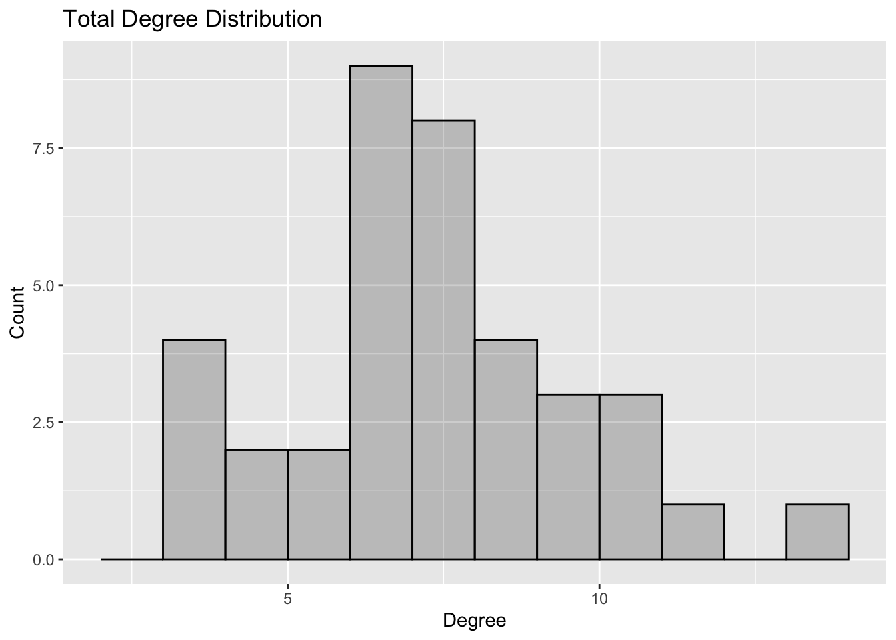
We can look at the distribution of in-degree.
ggplot(data=valente.degree, aes(v_indeg)) +
geom_histogram(breaks=seq(-1,14, by=1), col="black", fill="black", alpha = .2)+
labs(title="In-Degree Distribution") +
labs(x="In-Degree", y="Count")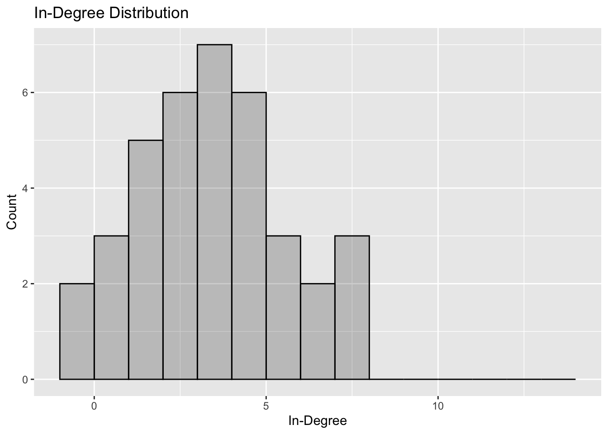
And the distribution of out-degree.
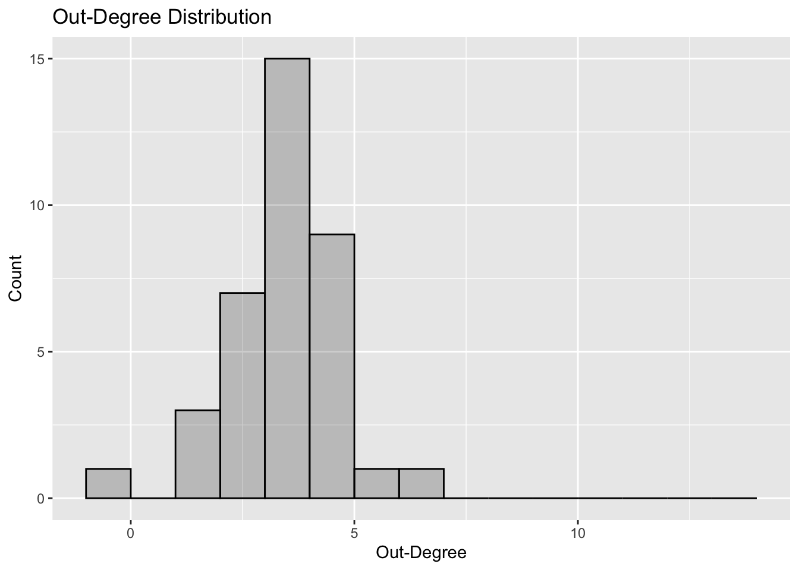
We can compare in-degree and out-degree.
ggplot(data=valente.degree,aes(v_indeg,v_outdeg))+
geom_point(aes(colour=factor(V(valente)$gender+1)))+
geom_smooth(method='lm', level=.95, formula=y~x)+
theme(panel.background = element_blank())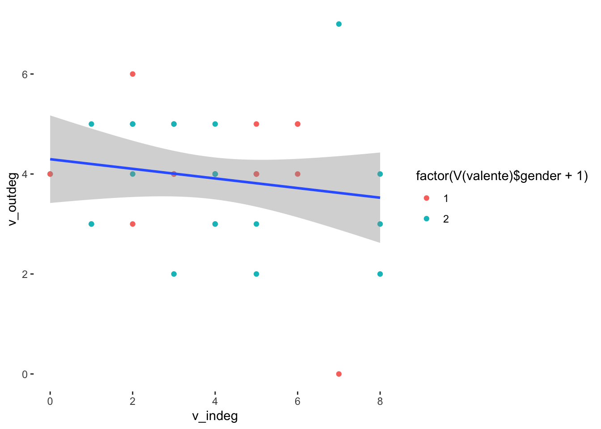
Network Composition
We can construct a variety of measures of network composition. For example we first might just want the percentage of nodes with a particular characteristics.
girl <- ifelse(gender==1,1,0)
boy <- ifelse(gender==0, 1, 0)
mean(girl)[1] 0.5945946mean(boy)[1] 0.4054054Network Composition: Mixing Matrix
We may want to know how many in-group or out-group ties there are. In sociology, this offers a good indication of social closure. We may also think about it as one indication of network segregation.
plot.igraph(valente, vertex.color=V(valente)$gender)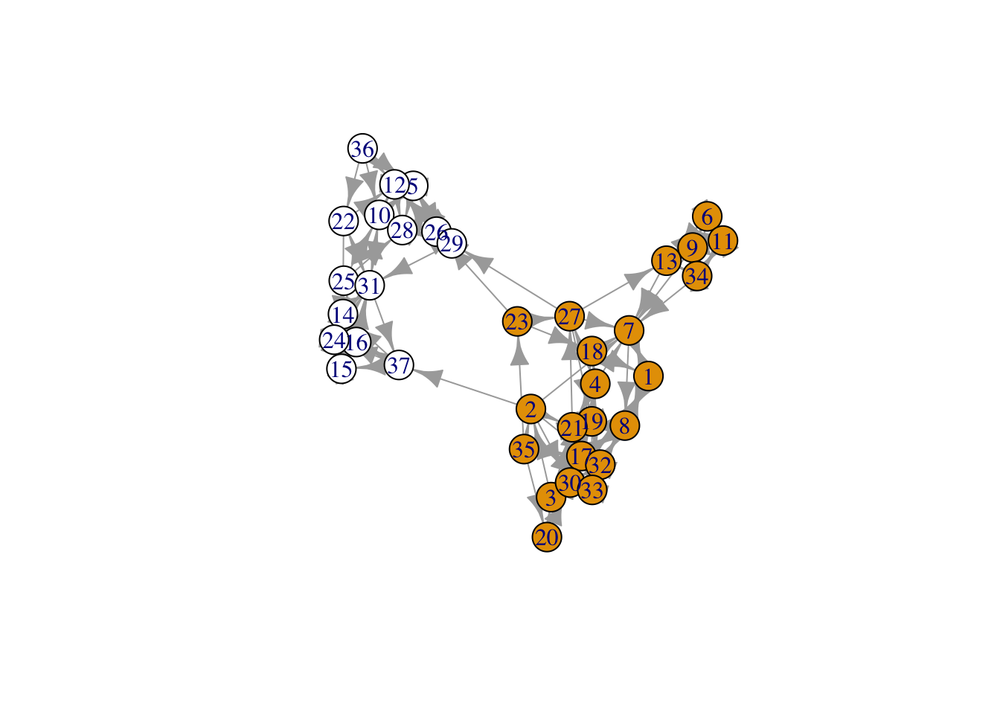
mixingm(valente, 'gender') # the density option would provide proportional representation alter
ego 0 1
0 60 0
1 3 82Now let’s compare to a random graph with the same number of nodes and edges. We use the sample_gnm() function to make this random graph.
rg <- sample_gnm(length(V(valente)), length(E(valente)), directed=T) # a random graph with the same number of nodes & edges as the Valente graph above
V(rg)$gender <- sample(c(0,1), length(V(rg)), replace=T, prob=c(22/37, 15/37)) #randomly assigning gender, matching the probabilities from the Valente graph
plot(rg, vertex.label= NA, edge.arrow.size=0.02,vertex.size = 5, vertex.color=V(rg)$gender*2, xlab = "Erdos-Renyi Random Graph")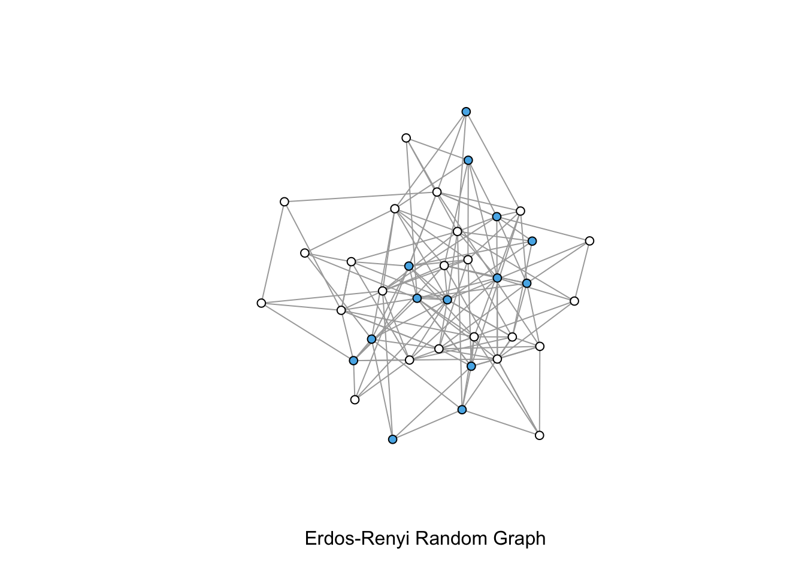
mixingm(rg, 'gender') alter
ego 0 1
0 52 32
1 39 22Note that your results will differ from mine. These are random draws.
We can compare the Valente graph and the random graph based on assortativity - measure of homophily developed by Mark Newman that indexes the number of edges within group over the variance as a whole. It is basically Pearson’s correlation coefficient and similarly varies from perfectly disassortative (-1) to perfectly assortative (1).
See:
Newman, M. E. (2003). Mixing patterns in networks. Physical review E, 67(2), 026126.
assortativity(valente, V(valente)$gender)[1] 0.9585236assortativity(rg, V(rg)$gender)[1] -0.0207258Network Composition and Segregation
One way of thinking about how a network is segregated is to calculate the odds of a within-group tie. The netseg package has a function - orwg - to construct this ratio.
orwg(simplify(valente), "gender") [1] 58.15254orwg(simplify(rg), "gender") [1] 0.9726568So the odds of a same gender tie are 58 times greater than the odds of a tie between boys and girls.
There are numerous other strategies for evaluating network segregation (e.g., Coleman’s index of segregation, the index of qualitative variation, etc.). Several of these are available in the netseg package.
Network Density
Network density provides an indication of the strong ties within the network.
It is the number of ties/number of possible ties. We can find the measure for the entire graph. The edge_density function in igraph will compute this measure.
edge_density(valente)[1] 0.1088589We can also compute the density for each ego network within a graph.
If you have an igraph object, you can pull out each ego network using make_ego_net.
valente_ego_dens <- make_ego_graph(valente, 1) %>%
vapply(graph.density, numeric(1))
head(valente_ego_dens)[1] 0.5833333 0.2321429 0.4761905 0.3928571 0.5476190 0.8000000We may want to know the relationship between ego network density and ego network size. Are larger networks more dense.
We can use the ego_size() function to calculate the size of each ego’s local network.
ego.size <- ego_size(valente)And we can check out the average ego network size now by just using the mean() function in base R.
mean(ego.size)[1] 6.945946We can store these in a data frame for easy access.
den.df<-data.frame(density=valente_ego_dens, size=ego.size)And we can plot the relationship in ggplot.
ggplot(data=den.df, aes(size, density))+
geom_point()+
geom_smooth(method='lm', level=.95, formula=y~x)+
theme(panel.background = element_blank())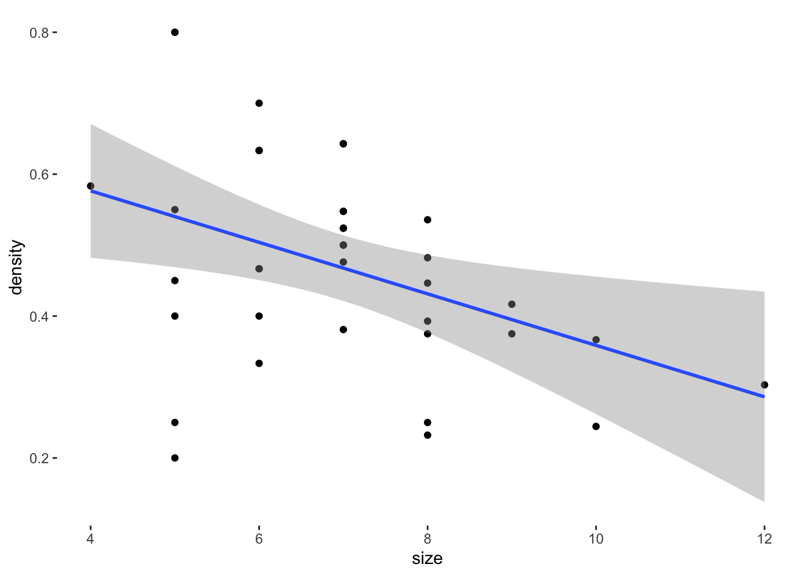
Transitivity
Transitivity is a measure of local clustering. It consists of the proportion of closed triads given all possible triads. The igraph default for the transitivity function is for each node but you can also calculate for the whole graph. This is an indication of how much local clustering is occurring in the graph as a whole. Note that specifying “type=local” we are calculating over each respondents ego network.
transitivity(valente)[1] 0.5142857transitive.valente <- transitivity(valente, type="local")
ego.size <- ego_size(valente)
tr.df <- data.frame(transitivity=transitive.valente, size=ego.size)We can plot transitivity by ego network size.
ggplot(data=tr.df,aes(transitivity,size))+
geom_point()+
geom_smooth(method='lm', level=.95, formula=y~x)+
theme(panel.background = element_blank())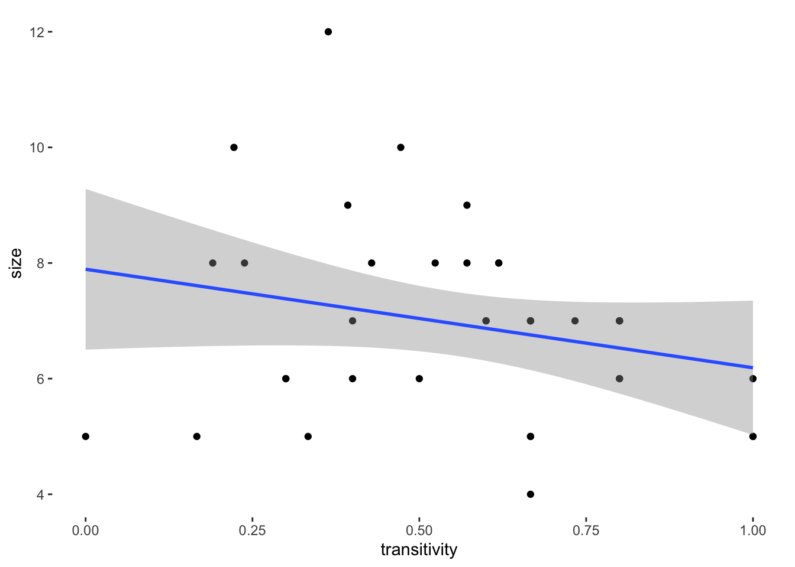
And plot transitivity as node size in a network.
plot.igraph(valente, vertex.size=transitive.valente*20, edge.arrow.size=.5, vertex.color=V(valente)$gender)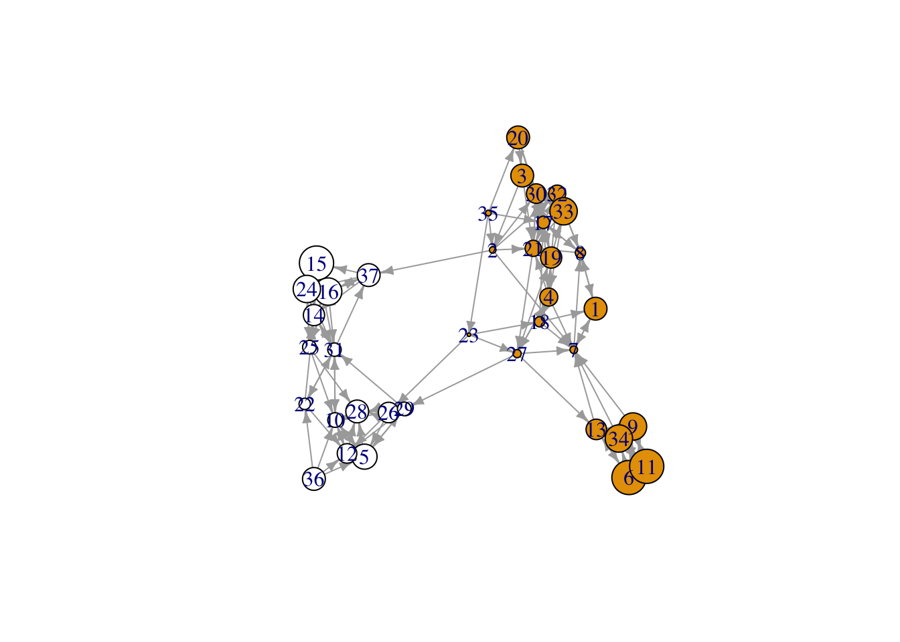
Constraint
Another local measure is the extent to which an actor may be constrained by local clustering. Constraint, in igraph the constraint() function, captures the extent to which a node’s local network is redundant. In other words, small networks with high redundancy will have high constraint scores. The formula itself has been called “daunting,” but translates to a combination of size, density, and hierarchy.
“Network constraint measures the extent to which your time and energy are concentrated in a single group” (Burt)
See:
Burt, R. S. (2015). Reinforced structural holes. Social Networks, 43, 149-161.
Burt, R. S. (1997). A note on social capital and network content. Social networks, 19(4), 355-373.
constraint.valente <- constraint(valente)
ego.size <- ego_size(valente)
con.df <- data.frame(constraint=constraint.valente, size=ego.size)We can look at the relationship between size and constraint.
ggplot(data=con.df,aes(constraint,size))+
geom_point()+
geom_smooth(method='lm', level=.95, formula=y~x)+
theme(panel.background = element_blank())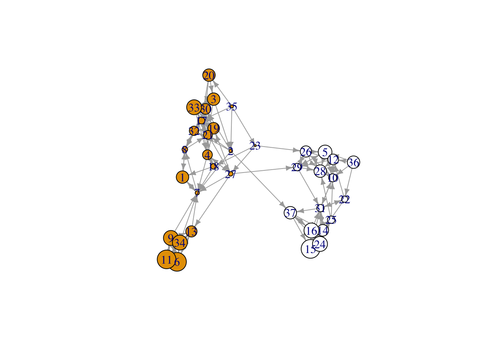
And plot as node size.
l <- layout_with_kk(valente)
plot.igraph(valente, vertex.size=con.df$constraint*10, edge.arrow.size=.01, layout=l, vertex.color=V(valente)$gender)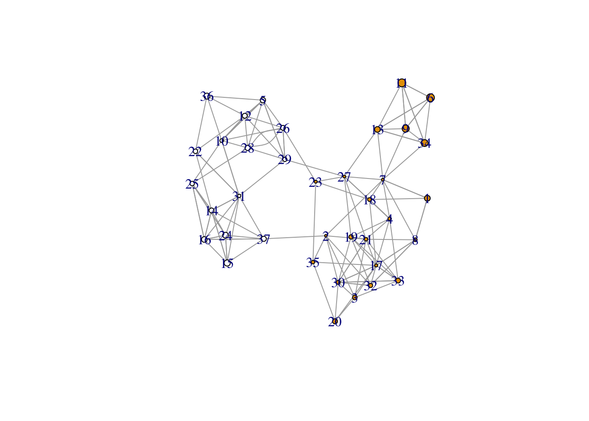
The inverse of constraint is one way to think about brokerage. The maximal number of Burt’s constraint is 1.125. So, if we subtract 1.125 from constraint we have one brokerage score.
con.df$inv <- 1.125-con.df$constraint
plot.igraph(valente, vertex.size=con.df$inv*10, edge.arrow.size=.5, vertex.color=V(valente)$gender)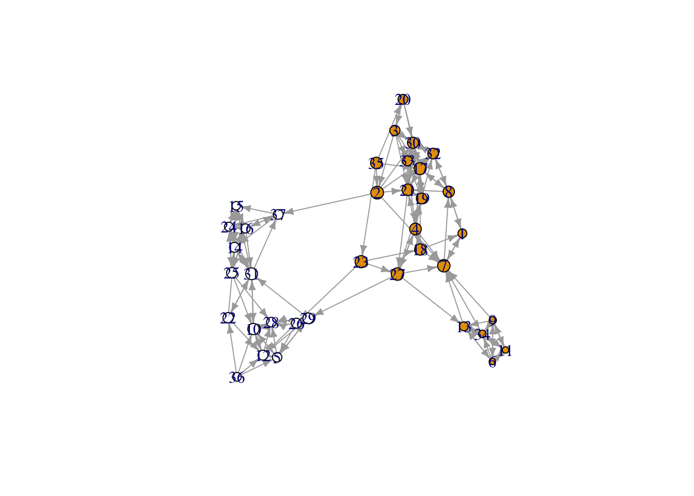
Small Worlds
Small worlds graphs have nodes with high transitivity -triads tend to close - and short average path length overall. The shortest path length, or geodesic, is the fewest number of edges that a thing would have to traverse to get from one node to another. You can use the distances(g) function to get the matrix of shortest paths and mean_distance(g) to get the average shortest path length for the network. A small world graph is the kind of graph that we would expect given the strength of weak ties hypothesis. Recall that transitivity of the graph can be found by transitivity(g).
We can build a random small world graph using the sample_smallworld function and compare to the previous simulated graph and the Valente graph.
See: Watts, D. J., & Strogatz, S. H. (1998). Collective dynamics of ’small-world’networks. nature, 393(6684), 440-442.
Watts, D. J. (2004). Small worlds: the dynamics of networks between order and randomness. Princeton university press.
small <- sample_smallworld(1, 37, mean(degree(valente)), 0.5, loops = FALSE, multiple = FALSE)
plot(small, vertex.label= NA, edge.arrow.size=0.02,vertex.size = 5, xlab = "Small world model")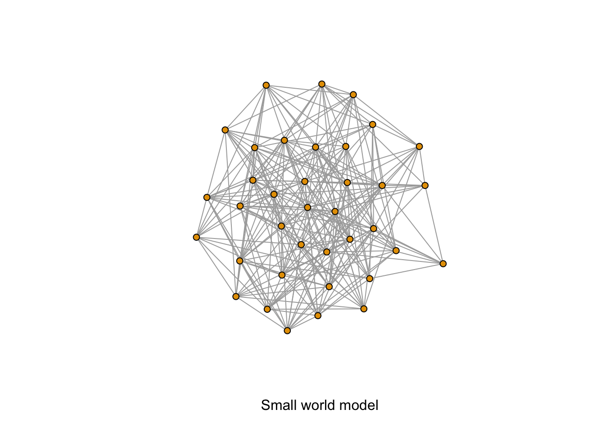
mean_distance(small)[1] 1.612613mean_distance(rg)[1] 2.628874mean_distance(valente)[1] 3.424561transitivity(small)[1] 0.3827792transitivity(rg)[1] 0.1979167transitivity(valente)[1] 0.5142857What does this basic comparison suggest for whether the Valente classroom is a small world?